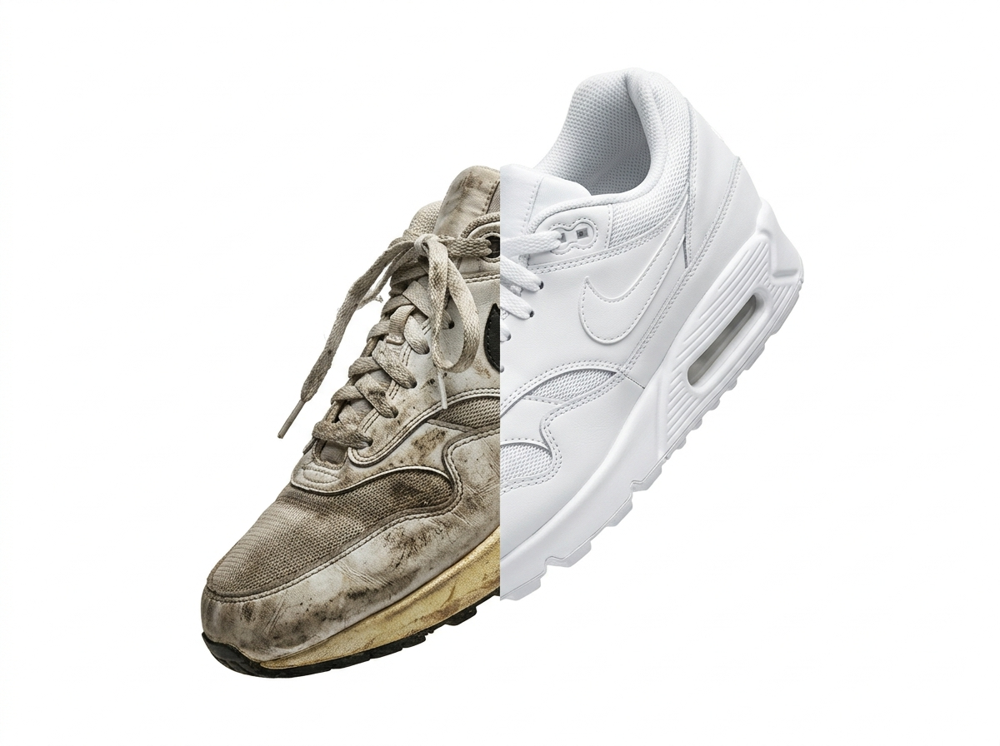
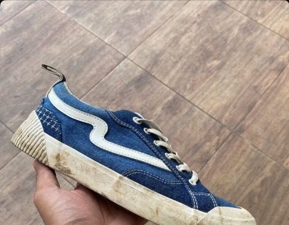
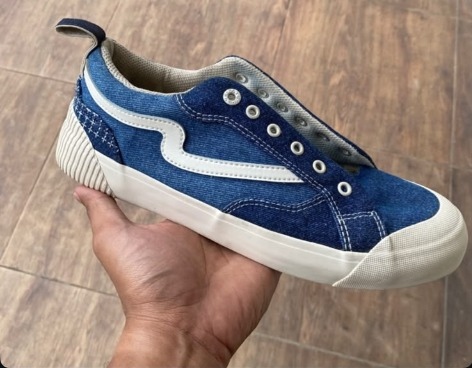
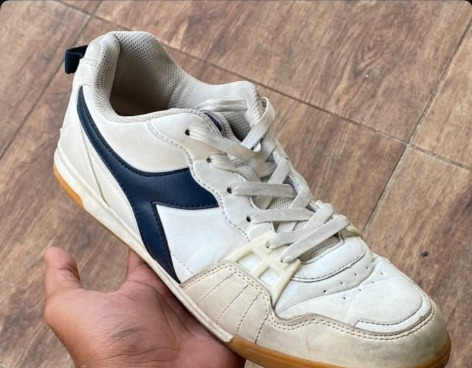
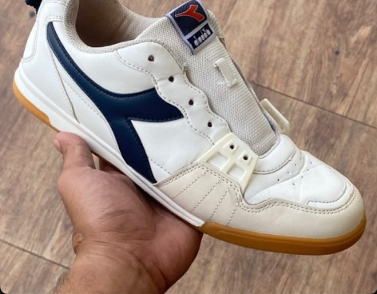
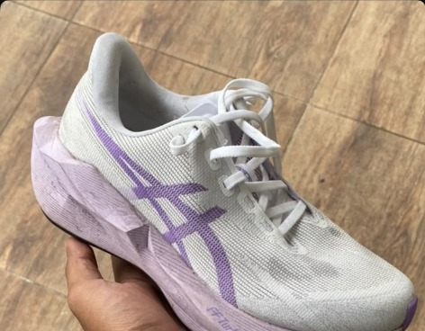
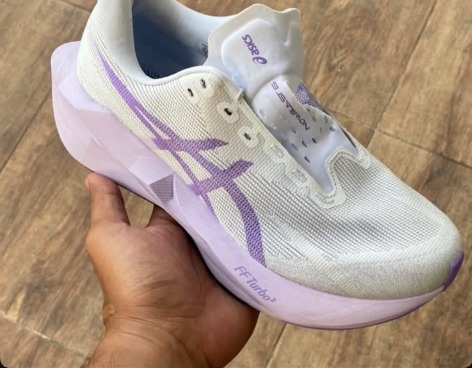
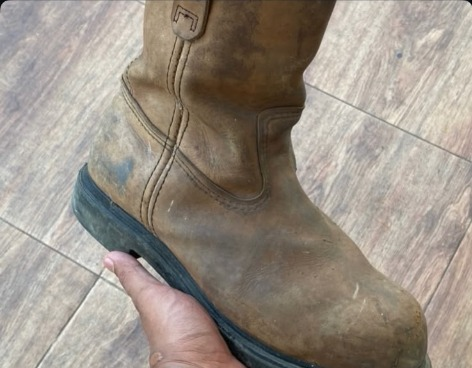
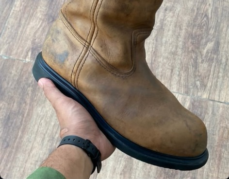

Estimasi 1–2 Hari
FAST CLEAN.
Rp35.000
Pembersihan bagian upper dan midsole sepatu untuk kesegaran kilat harian.
Jasa cuci sepatu manual di Balikpapan untuk sneakers, suede, kulit, dan boots. Buka Selasa–Minggu pukul 17.00–22.00 WITA. Dibersihkan teliti tanpa mesin putar perusak lem.

pilih sesuai kebutuhan ↓ Formula chemical khusus disesuaikan dengan jenis bahan canvas, suede, leather, knit, dan boots
Pembersihan bagian upper dan midsole sepatu untuk kesegaran kilat harian.
Pembersihan mendalam seluruh bagian sepatu (upper, midsole, outsole, insole, dan tali sepatu).
Pemutihan sol menguning (*unyellowing*) dan pengecatan kembali (*repaint*) warna yang pudar.
Catatan: Estimasi waktu di atas adalah patokan umum. Estimasi final akan dikonfirmasi admin saat serah terima sepatu sesuai antrean.
fakta perawatan sepatu ↓ Perbedaan nyata metode pencucian rumahan dibanding teknik workshop kriya kami
bukti pengerjaan detail ↓ Noda pekat, daki kulit, hingga sol menguning bersih tuntas sesuai bahan sepatumu.


Noda tanah dan debu pekat pada upper denim dan midsole terangkat tuntas tanpa memudarkan warna kain.


Lekukan kulit kusam dan noda daki dibersihkan menyeluruh hingga kembali cerah cemerlang.


Bahan rajut bernapas dan bantalan foam tebal dibersihkan tanpa merusak elastisitas sol.


Lumpur tanah pekat pada kulit tebal dibersihkan dan diberi nutrisi pelembap agar tetap lentur dan kokoh.
bebas ribet dari rumah ↓ Layanan kurir pick-up & delivery khusus area Balikpapan. Anda tetap santai di rumah, biar kami yang jemput dan sikat.
Foto sepatu & kirim titik alamat rumah Anda di Balikpapan.
Tim kami ambil sepatu langsung ke depan pintu rumah Anda.
Selesai dicuci manual teliti, sepatu diantar kembali siap pakai.
Graha Indah, Kariangau Bawah, Batu Ampar Km 4–5, & sekitarnya
MT Haryono, Balikpapan Baru, Ring Road, Wika, Kampung Baru, Karang Rejo. Ongkos riil sesuai jarak tempuh Google Maps.
Klandasan, Sudirman, Sepinggan, Batakan, Manggar, & area lainnya. Cek rute dan ongkir pasti sebelum kurir meluncur.
informasi lengkap ↓ Jawaban cepat seputar proses, bahan, dan ketentuan cuci di Sinisudah.Kusikat
Kami melayani hampir semua material sepatu, termasuk canvas, mesh, knit, kulit sintetis, kulit asli, suede, dan nubuck. Setiap material dibersihkan menggunakan formula pembersih khusus serta bulu sikat dengan kelembutan yang disesuaikan agar serat dan warna bahan tetap awet.
Sangat aman. Kami tidak menggunakan deterjen pakaian keras yang dapat mengikis warna dan tidak menjemur sepatu di bawah sinar matahari terik langsung. Pengeringan dilakukan di ruangan khusus bersuhu stabil sehingga lem tetap rekat kuat dan sol terlindungi dari risiko yellowing dini.
Cukup foto sepatu Anda (bagian atas, samping, atau bagian kotor/noda yang ingin dibersihkan), lalu kirimkan melalui chat WhatsApp kami. Tim kami akan dengan senang hati memeriksa kondisi sepatu dan memberikan saran paket perawatan terbaik (Fast Clean, Deep Clean, atau Unyellowing & Repaint).
Layanan antar-jemput Gratis untuk jarak 1–3 km dari workshop Sinisudah.Kusikat di Balikpapan. Untuk lokasi di luar radius 1–3 km, ongkos antar-jemput akan disesuaikan secara transparan berdasarkan jarak tempuh Anda dan dikonfirmasi langsung oleh admin via WhatsApp sebelum penjemputan.
Gambaran umum estimasi waktu adalah 1–2 hari untuk layanan Fast Clean dan 2–4 hari untuk Deep Clean. Untuk paket Unyellowing dan Repaint khusus, estimasi final akan diinformasikan dan dikonfirmasi langsung oleh admin saat hendak menyerahkan sepatu sesuai antrean dan tingkat kebutuhan pengerjaan.
petunjuk arah & drop-off ↓ Drop-off sepatu langsung atau kunjungi kami pada jam operasional berikut
Temukan lokasi workshop Sinisudah.Kusikat melalui Google Maps untuk panduan rute GPS langsung dari lokasi Anda di Balikpapan.